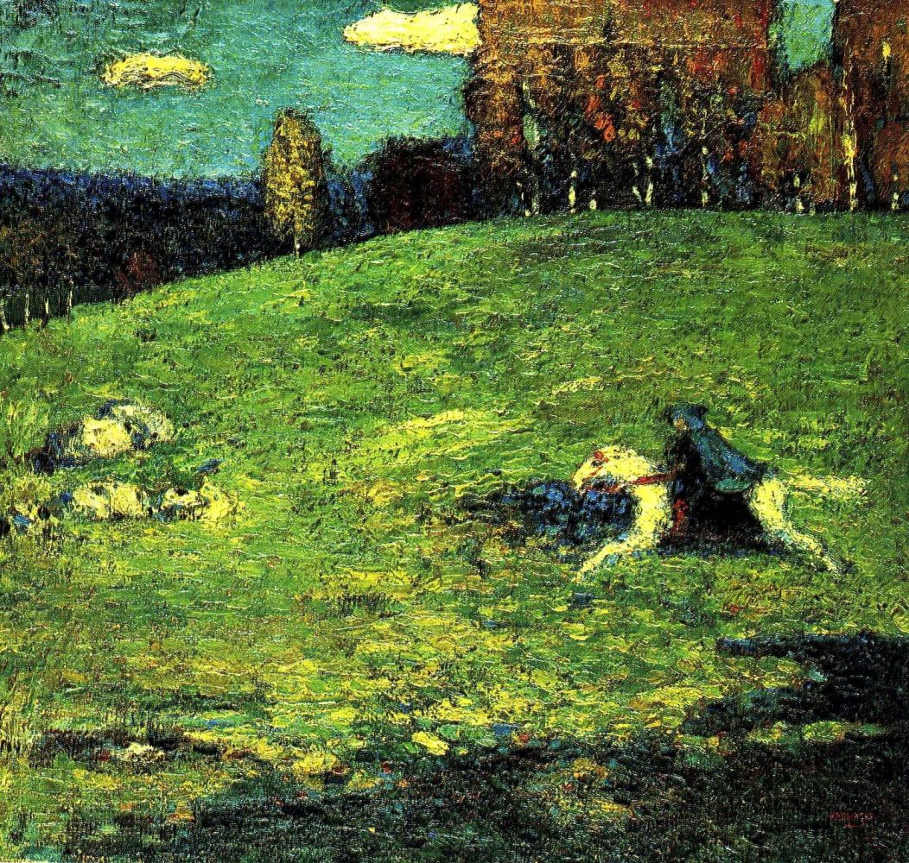

«Синий всадник»
Описание
Небольшая, по сравнению с более поздними монументальными полотнами, картина «Синий всадник» была написана Кандинским в самом начале его художественной карьеры. Можно сказать, что эта работа – одна из самых важных и знаковых не только для раннего периода творчества Кандинского, но и для всего его творческого пути. В конце концов, именно это полотно дало название творческому объединению, созданному в 1911 году Василием Кандинским и Францем Марком. Просуществовав всего три года, группа «Синий всадник» сумела поставить с ног на голову немецкие живописные традиции и дать развитие принципиально новым формам искусства.
Василий Кандинский никогда не делал заявлений о том, что объединение было названо в честь его картины. Художник лишь однажды признался в том, что название было данью уважения обоим основателям: «Мы оба любили синий цвет. Я – всадников, а Марк – лошадей». Всадники в самом деле становятся героями его картин так же часто, как Франц Марк изображает синих лошадей. Ради этих героев Кандинский даже после ухода в абстракционизм периодически возвращается к фигуративной живописи, например, в 1915 году изображает Георгия Победоносца на коне.
Картина «Синий всадник» стала первой живописной работой художника, изображающей человека на лошади. И хотя она была написана задолго до отказа Кандинского от предметной живописи, некоторые искусствоведы уже в ней видят предпосылки будущего стиля художника. Одетый в синее всадник, который скачет через зеленый луг, изображен будто бы небрежно, его размытая фигура и лицо не позволяют угадать ни пол, ни возраст.
Нечеткость очертаний человека вместе со «смазанным» фоном создают ощущение быстрого, стремительного движения, не оставляя сомнений в том, что всадник несется к своей невидимой цели во весь опор. Некоторые исследователи выдвигают версию о том, что на руках человека лежит младенец. Следуя этой теории, можно вообразить целую захватывающую историю, романтическую или трагическую, скрывающуюся за полотном.